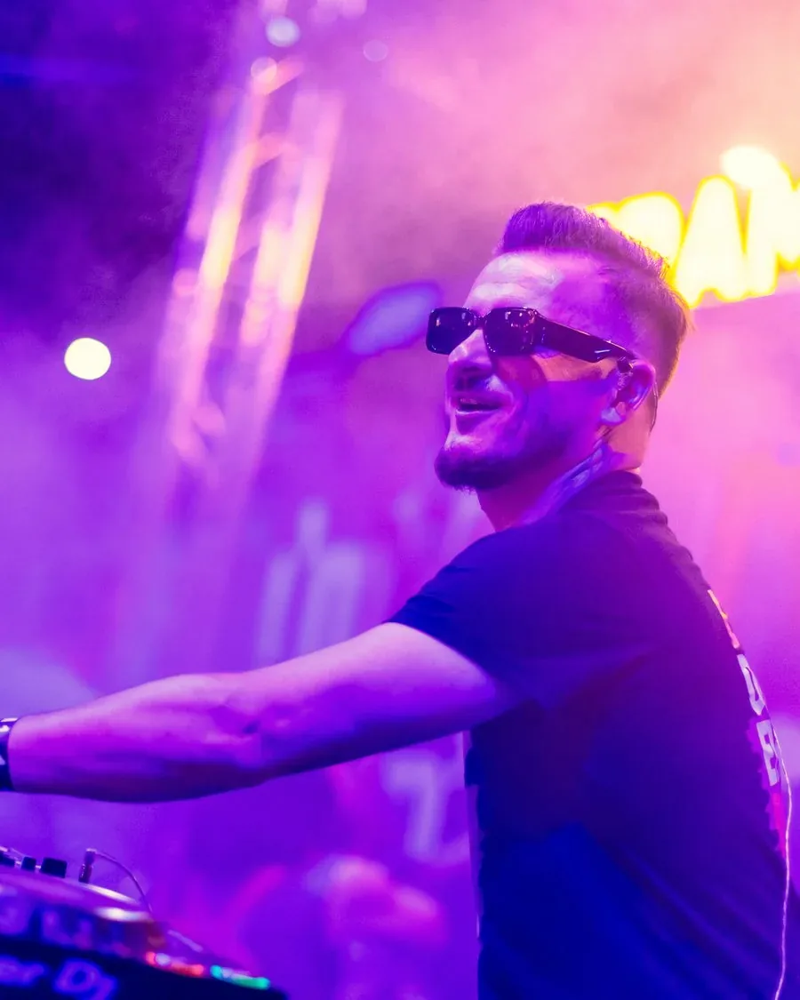
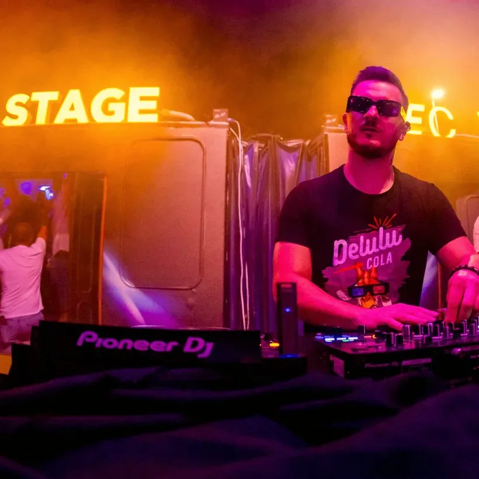
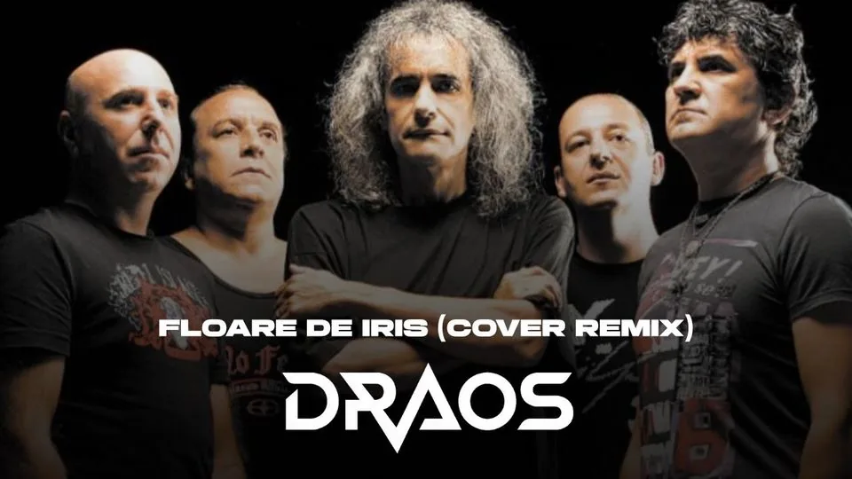

„Totul e posibil cu mindsetul potrivit.”
Festivaluri & cluburi — pe scenă la UNTOLD, Overnight by UNTOLD, Snow-Fest și Bukovel. România și internațional.
- 25 ani la platane
- 13.700+ urmăritori
- UNTOLD 2024–2026


01 — Cine e
Despre
În spatele platanelor din 2001, oficial din 2005 — un sfert de secol de seturi în cluburi și pe scene mari, în țară și internațional. Primul contact cu muzica: la 10 ani, în clubul deschis de părinții lui.
Invitat constant la UNTOLD Festival (2024–2026, inclusiv Tram Stage alături de DFO Trumpets) și la Overnight by UNTOLD. Ani de rezidențe internaționale: Snow-Fest (Les Deux Alpes), Snowland și Italian Snow-Fest (Livigno), Romanian Ski Days (Austria), Bukovel Music Festival (Ucraina). Membru al label-ului WAW Recordings.
Printre pionierii live-urilor online din România cu #D24 (2016) — un mix live de 24 de ore non-stop. Stilul: House, Afro House, Ethnic și Progressive — citite mereu după energia publicului.
„Unul dintre cei mai tehnici DJ din Transilvania."— CDj Events
Apariția lui la UNTOLD a fost remarcată și de presa locală din Luduș, orașul lui natal.
02 — Muzică
Ascultă
Seturi, remixuri și înregistrări live — apasă play.
Ascultă seturile live
Wedding show, WTA Players Party, b2b — playlist SoundCloud
LiveSet @ Buka Club, Bukovel Mixcloud

Floare de Iris (Cover Remix) YouTube
Piese proprii, lansate oficial: DRAOS pe Beatport ↗
Playerele SoundCloud și Mixcloud pornesc în pagină la click; videoclipurile se deschid direct pe YouTube.
03 — Studio
Piese lansate
Release-uri oficiale, pe labeluri internaționale.
04 — Scenă
Evenimente & referințe
Câteva scene și evenimente care spun povestea mai bine decât orice descriere.
Urmează pe scenă
- 2026UNTOLD Festival — Tram Stage, alături de DFO Trumpets · Cluj-Napoca ↗
- 2025UNTOLD Festival · Overnight by UNTOLD ↗
- 2023–2024Transylvania Open (WTA 250) — Players Party oficial · Radisson Blu, Cluj ↗
- intl.Rezidențe: Snow-Fest (Les Deux Alpes, FR) · Italian Snow-Fest & Snowland (Livigno, IT) · Romanian Ski Days (AT) · Bukovel (UA) ↗
- din 2016#D24 — mix live online de 24 de ore, printre primele formate de acest fel din România
Datele viitoare se anunță pe Instagram. Pentru data ta:
Cere o dată05 — Atmosferă
Live
UNTOLD 2025, Tram Stage — și nu numai.
06 — Practic
Întrebări frecvente
Pentru ce evenimente îl pot rezerva?
În principal festivaluri și cluburi — de la Tram Stage-ul UNTOLD la party-uri oficiale ca Transylvania Open. Corporate și evenimente private, la cerere (evenimentele private se organizează prin partenerii CDj Events).
Cum rezerv o dată?
Scrie pe WhatsApp, sună la +40 754 968 243 sau trimite mail la contact@draosmusic.ro. Rezervările se fac de regulă cu minim 3 luni înainte (se fac și excepții), iar data se confirmă prin contract și avans. Contractele se încheie prin Marginean Dragos-Emil PFA (CUI 46410769).
Cât costă?
Fiecare ofertă e personalizată — depinde de tipul evenimentului, durată și locație. Prețul se comunică la cerere, rapid, după ce spui data și detaliile.
Ce include tehnic?
Vine cu setup-ul complet de DJ; sunetul și luminile le asigură locația sau organizatorul (rider tehnic disponibil la cerere). La evenimente private, programul poate ține până la 8 ore; la festival și club, după programul scenei. La cerere: show extins cu trompete live (DFO Trumpets).
Ce muzică voi auzi?
House, Afro House, Ethnic House și Progressive — adaptat la public și la moment, cu un setup tehnic complex.
Unde se deplasează?
Din Cluj-Napoca, disponibil în toată România și internațional — a mixat în Franța, Italia, Austria și Ucraina.
08 — Contact
Booking
Alege tipul evenimentului — confirmi în fereastră și mesajul pleacă gata scris pe WhatsApp:
Sau pe mail: contact@draosmusic.ro · Descarcă EPK (PDF)
Cluj-Napoca · disponibil în toată România și internațional